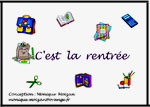
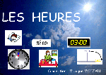
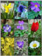

Les exercices proposés dans cette rubrique s'adressent à des enfants ou jeunes qui entrent dans la lecture. Ils permettent de renforcer les préalables indispensables pour l'apprentissage de la lecture
- organisation et repères dans l'espace
- écoute et lecture d'images, compréhension
- développement du vocabulaire
- apprentissage des phonèmes (lettres) par repères visuels, discrimination auditive
- approche des syllabes à associer aux mots (travail à compléter avec les exercices de la rubrique "sons simples"
- apprentissage du clavier
- lecture de mots
Ces exercices sont sonorisés.
Pour avancer dans ce niveau de lecture, on peut couper le son en cliquant sur l'icone "haut-parleur" en bas à droite de la fenêtre de l'exercice.
Le point d'interrogation en bas à gauche donne un aide en cliquant dessus.
Quand vous "lancez l'application", les exercices en ligne s'ouvrent dans une nouvelle fenêtre. Si elle ne s'ouvre pas c'est qu'un pare-feu est activé. Vous devez alors autoriser l'ouverture de la nouvelle fenêtre en cliquant sur la barre qui s'affiche en haut de votre navigateur.
Ces activités peuvent être longues à démarrer lors de l'utilisation sur le site, soyez patient ... Elles contiennent photos et sons. Elles peuvent utiliser la police BV Rondes. (Voir page d'accueil)
C'est la rentée :  Télécharger - Lancer l'application
Activités d'écoute, de lecture et d'écriture des syllabes avec "L", autour du thème de la rentrée des classes.
C'est l'automne :  Télécharger - Lancer l'application
Télécharger - Lancer l'application
nouvelle version (novembre 2013)
Activités d'écoute, de lecture, d'écriture des syllabes avec "ch" et autres, autour du thème de l'automne.
La photo : "Forêt au petit matin" est de Patricia NEY sur le site : http://www.fond-ecran-image.com/galerie-membre/photo-foret.html
C'est Noël :  Télécharger - Lancer l'application
Télécharger - Lancer l'application
Activités d'écoute, de lecture, d'écriture de syllabes, autour du thème de Noël.
La galette des Rois :  Télécharger - Lancer l'application
Télécharger - Lancer l'application
Activités d'écoute, de lecture, d'écriture de syllabes, autour du thème de la galette des Rois.
La date : Télécharger - Lancer l'application
Apprendre à lire et écrire la date. A utiliser chaque jour de l'année. (Nouvelle version actualisée 01-2013)
L'heure :Télécharger - Lancer l'application
Aborder la notion de l'heure sur les pendules analogiques et digitales, heures justes associées aux activités de la journée. Trois séries : les heures avant midi, les heures après midi version simple (ex. 4 heures de l'après-midi) et les heures après midi version plus difficile (ex. 16 heures).
Utilise la police BV Rondes
Les jours de la semaine : Télécharger - Lancer l'application
Lire, écrire, ordonner les jours de la semaine.
Les mois : Télécharger - Lancer l'application
Lire, écrire, ordonner les mois.
Les phrases : Télécharger - Lancer l'application
Lire et écrire des phrases simples utilisant un petit capital de mots, introduisant les notions spatiales (sur, sous, dans, devant, derrière)
Les crêpes :  Télécharger - Lancer l'application
Télécharger - Lancer l'application
Au mois de février, on fait des crêpes...
L'hiver :  Télécharger - Lancer l'application
Télécharger - Lancer l'application
C'est Pâques :  Télécharger - Lancer l'application
Télécharger - Lancer l'application
Les fleurs :  Télécharger - Lancer l'application
Sur le thème du printemps, activité d'écoute, de repères, de mémoire, de lecture de quelques consonnes, de syllabes avec des fleurs.
Les arbres : Télécharger - Lancer l'application
Sur le thème du printemps, des arbres en fleurs, des bourgeons...
Les oiseaux : Télécharger - Lancer l'application
Sur le thème du printemps, des oiseaux et leur nid...
Source des chants d'oiseaux :Terra Nova http://www.dinosoria.com
Le 1er mai :  Télécharger - Lancer l'application
Télécharger - Lancer l'application
Sur le thème du muguet... + initiation à la monnaie.
Les animaux de la ferme et leurs petits :  Télécharger - Lancer l'application
Télécharger - Lancer l'application
Ecouter, reconnaître, lire, écrire, mémoriser, quelques animaux de la ferme et leurs petits.